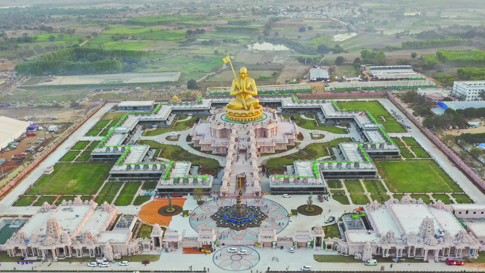

Statue of Equality
The Statue of Equality, officially known as the Statue of Bhagavad Ramanuja Acharya, is a monumental statue dedicated to the 11th-century Indian philosopher and social reformer Ramanujacharya. It stands as a symbol of equality, social justice, and harmony.
Location: Muchintal, Hyderabad, Telangana, India
Height: Approximately 216 feet (66 meters)
Significance: Represents the teachings and principles of Ramanujacharya on equality and inclusiveness.